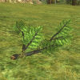
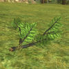

Шир
 Шир, и-Дранн, Сузат или попросту Удел — край давно забытый почти всеми, кроме, пожалуй, части хоббитов, дивного народца, называющего эти края своим домом.
Некогда все эти земли были заповедными охотничьими угодьями самих Королей, восседавших в Аннуминасе. Быть может, именно поэтому в Шире почти нет древних руин и развалин, окромя пары возвышающихся башен и моста через Брендивин. Впрочем, практичные хоббиты тоже приложили руку к их разрушению, ремонтируя дороги и возводя ограды для своих садов.
Шир, и-Дранн, Сузат или попросту Удел — край давно забытый почти всеми, кроме, пожалуй, части хоббитов, дивного народца, называющего эти края своим домом.
Некогда все эти земли были заповедными охотничьими угодьями самих Королей, восседавших в Аннуминасе. Быть может, именно поэтому в Шире почти нет древних руин и развалин, окромя пары возвышающихся башен и моста через Брендивин. Впрочем, практичные хоббиты тоже приложили руку к их разрушению, ремонтируя дороги и возводя ограды для своих садов.
- Встречаемые ресурсы:
- Древесина
- Рябина
 
 - Ясень

- Рябина
- Руды
- Медь

- Могильное железо

- Серебро

- Медь
Ссылка на интерактивную карту локации: